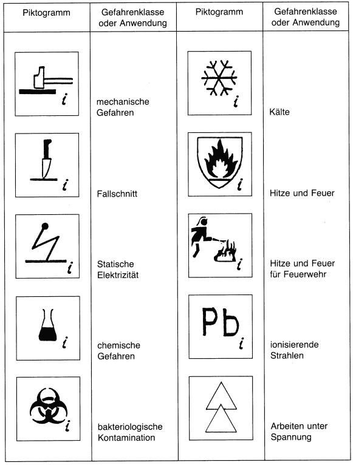

Piktogramme (siehe auch DIN EN 420 „Schutzhandschuhe; Allgemeine Anforderungen und Prüfverfahren“ und DIN EN 60903/VDE 0682 Teil 311 „Arbeiten unter Spannung; Handschuhe aus isolierendem Material“) (Beispiele)
